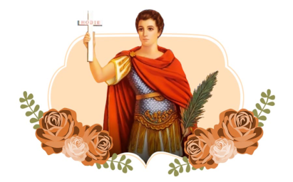

Oração do Terço de Santo Expedito
-
Sinal da Cruz
-
- Em nome do Pai e do Filho e do Espírito Santo. Amém.
-
Oferecimento
-
- Meu Jesus, misericórdia dos meus pecados, libertai-me de todos os males que me
oprimem o corpo, a alma e o espírito. Dai-me a vossa graça e a vossa paz. Não
retireis de mim o vosso Santo Espírito.
-
Orações
-
- Credo
-
- Pai Nosso
-
- 3x Ave Maria
-
- Gloria Ao Pai
-
Nas Contas Grandes se Reza
-
- 1º Mistério: Ó Santo
Expedito, das causas urgentes,
atende o pedido de tantos irmãos. Amigo dos pobres, aflitos, doentes,
concede-nos sempre tua proteção!
- 2º Mistério: Ó Santo
Expedito, tua fé, firme e
forte, ganhaste de Cristo, a coroa da glória. E, martirizado, tiveste esta
sorte, nós hoje cantamos a tua vitória.
- 3º Mistério: Ó Santo
Expedito, tu és o modelo dos
jovens, soldados e dos estudantes, em nome de Cristo te pedimos, semeia
bondade em todos os lugares.
- 4º Mistério: Ó Santo
Expedito, que os viajantes não
sofram nas suas viagens e voltem aos lares felizes e contentes, com fé,
esperança, e muita coragem.
- 5º Mistério: Ó Santo
Expedito, a minha conversão de
hoje não posso adiar para amanhã, anseio um dia ter a salvação, por isso
desejo a vida cristã.
-
Nas Contas Pequenas se Reza
-
- Ó Santo Expedito, és forte, guerreiro, soldado de Cristo, fiel vencedor! Nas
horas difíceis és mediador do povo que reza com tanto fervor.
-
No Fim de Cada Mistério
-
- Glória ao Pai, e ao Filho e ao Espírito Santo. Como era no princípio, agora e
sempre. Amém.
-
Oração Final
-
- Ó Poderoso Santo Expedito, apresentai a Deus os meus pedidos, neste momento de
aflição e desespero em que me encontro. Atendei com urgência o que vos peço com
fé e confiança. Anunciarei o vosso nome bendito entre os
meus irmãos para que se convertam a Cristo seguindo o vosso belo exemplo de
Mártir Glorioso, não trocando Jesus por nada. Amém.
A Poderosa oração a Santo Expedito
Meu Santo Expedito das causas justas e urgentes, socorrei-me nesta hora de aflição
e desespero, interceda por mim junto ao Nosso Senhor Jesus Cristo. Vós que sois um
santo guerreiro. Vós que sois o santo dos aflitos. Vós que sois o santo dos
desesperados. Vós que sois o santo das causas urgentes. Protegei-me, ajudai-me,
dai-me força, coragem e serenidade. Atendei ao meu pedido: (fazer o
pedido). Ajudai-me a superar estas horas difíceis, protegei-me de todos
que possam me prejudicar. Protegei minha família, atendei o meu pedido com urgência.
Devolva-me a paz e a tranquilidade. Serei grato pelo resto de minha vida e levarei
seu nome a todos que tem fé. Santo Expedito, rogai por nós. Amém."